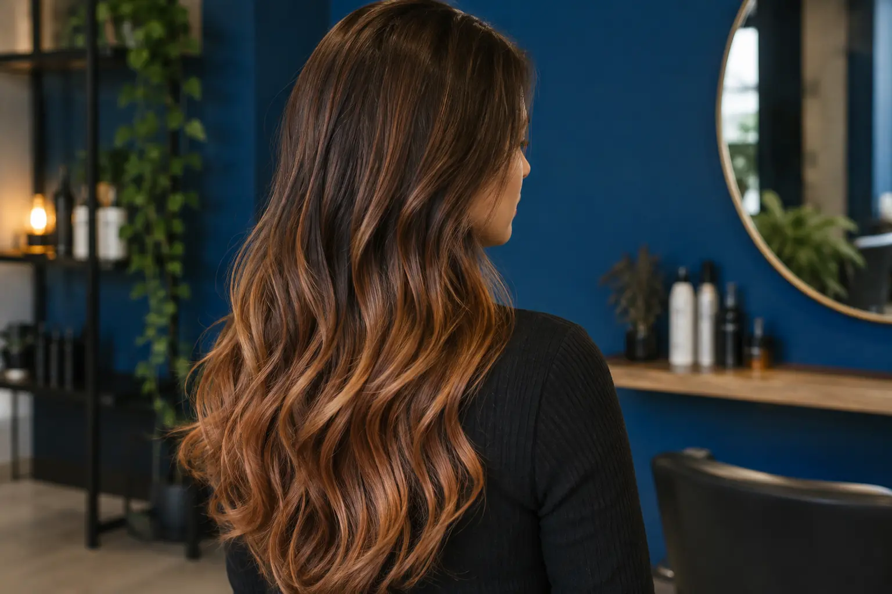

Ombré, sombré ir balayage: rezultato pavadinimas ar darbo technika?
Autorius: Madbeauty redakcija · Numatyta 2026 m. gruodžio 21 d. 16:00 (Lietuvos laiku)
Palyginkite ombré, sombré ir balayage pagal spalvos perėjimą, kontrastą ir šviesesnių sruogų išdėstymą. Sužinokite, kaip aiškiai aprašyti norimą vaizdą ir patikrinti, kas įeina į paslaugą.

Trumpai: ombré ir sombré dažniausiai nusako matomą spalvos perėjimą, o balayage paprastai apibūdina dažymo būdą ar šviesesnių sruogų išdėstymą. Sombré yra švelnesnio kontrasto tos pačios krypties perėjimas. Pavadinimai gali persidengti, todėl iš meniu žodžio vieno neįmanoma spręsti apie tikslų rezultatą ar vizito apimtį. Wella ombré ir sombré žodynas
Perėjimo vieta ir kontrastas
Ombré įprastai reiškia tamsesnių šaknų ar vidurinės dalies perėjimą į šviesesnius plaukų ilgius ir galiukus. Renkantis vaizdą svarbu nusakyti, kur maždaug norėtumėte matyti šviesėjimą ir ar perėjimas turėtų būti aiškus, ar vos pastebimas. Sombré apibūdina švelnesnį, mažesnio kontrasto ombré įspūdį; tai nėra atskira universali spalvos formulė.
Balayage dažniau nusako, kaip plaukuose išdėstomos šviesesnės sruogos, o ne vieną konkretų gradientą. Jų vieta ir tankis gali sukurti kitokį vaizdą nei tolygus tamsesnės viršutinės dalies perėjimas į šviesesnius galiukus. Wella profesinėje medžiagoje balayage, sruogos ir viso plauko šviesinimas su tonavimu aptariami kaip skirtingi spalvos pasirinkimai. Wella balayage ir šviesinimo apžvalga
Kaip palyginti norimą vaizdą
Įsivaizduokite tris panašios pradinės spalvos plaukų pavyzdžius. Tai tik iliustracinis palyginimas, o ne tikro kliento rezultatas ar dažymo receptas:
- Ombré: šaknys ir viršutinė ilgio dalis lieka tamsesnės, o ilgiai ir galiukai palaipsniui atrodo šviesesni.
- Sombré: perėjimas eina panašia kryptimi, tačiau spalvų skirtumas švelnesnis.
- Balayage: šviesesnės sruogos išdėstomos plaukuose; bendrą vaizdą lemia jų vieta, o ne vien vientisas perėjimas.
Žiūrėdami į etaloninę nuotrauką užsirašykite tris dalykus: kur prasideda šviesesnė spalva, kiek ryškus jos kontrastas ir ar matote vientisą perėjimą, ar atskiras šviesesnes sruogas. Pavyzdžiui: „Noriu tamsesnių šaknų, šviesesnių ilgių ir minkšto perėjimo, be ryškios ribos.“ Jei svarbios konkrečios sruogos, nurodykite jų vietą nuotraukoje. Tai padeda apibūdinti pageidavimą, bet negarantuoja identiško rezultato.
Pavadinimas dar nėra paslaugos apimtis
„Ombré“ ar „balayage“ meniu eilutė pati nepasako, kurios zonos bus dažomos, ar įtrauktas tonavimas, ankstesnės spalvos įvertinimas ir kiti darbai. 2026 m. spalio 9 d. peržiūrėtame vieno salono meniu tonavimas buvo nurodytas atskirai nuo visų plaukų dažymo. Tai konkretaus meniu pavyzdys, o ne bendra taisyklė. Faces Hair & Makeup dažymo ir kirpimo meniu
Prieš pasirinkdami pasiūlymą palyginkite ne vien technikos pavadinimą, bet ir įtrauktus darbus, nurodytą kainą bei vizitui skirtą laiką. Taip atskirsite norimą spalvos vaizdą nuo konkretaus paslaugos paketo.
Procedūrų aprašai kataloge: Ombre. Miestą ir realaus teikėjo pasiūlymą pasirinkite kataloge, kai tokia pasiūla pateikta.
Susiję gidai
Šaltiniai
- Žirmūnų 22 · plaukų paslaugų meniu · www.treatwell.lt
- Faces Hair & Makeup · dažymo ir kirpimo apimtis · www.treatwell.lt
- Looks · kirpimas ir dažymas · www.treatwell.lt
- NHS · reakcijos į plaukų dažus · www.nhs.uk
- Wella · dažų saugos testai · www.wella.com
- Wella · balayage, sruogos ir šviesinimas · www.wella.com
- Wella: ombre ir sombre spalvų žodynas · www.wella.com